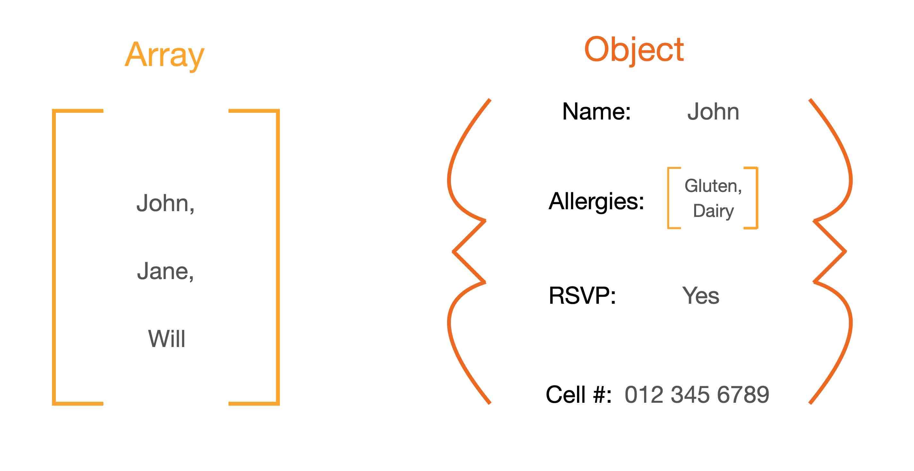

JavaScript Fundamentals

JavaScript and its relationship to HTML and CSS
HTML (Hyper Text Markup Language) and CSS (Cascading Style Sheets) are the building blocks for all websites. HTML provides the structure for the content while CSS the flow and styling. For context in the real world, think about a sports arena.
The most basic sports arena would include a field/court, stands for spectators and flood lights – this is HTML in a nut shell. It provides the structure required to make the arena possible. CSS adds the size and shape of the field. Is it a rectangle for rugby or an oval for cricket? The height of the grand stand, the colours of the seating and how bright the lights are.
So where does JavaScript fit in? JavaScript has all the bells and whistles which add to your experience. Turning the flood lights on when it’s dark, playing music when your team scores and sounding the horn to start the game, just to name a few.
JavaScript is a programming language built for the web to enhance your experience while using websites. JavaScript interacts with both HTML and CSS by changing or adding content and styles to a web page while a user interacts with it.
Control flow and loops, arrays and objects
Control flow and loops provide decision making capabilities for websites and applications. For example, when you cross a road, you first check to see if its safe. You look to your left and right. If it is safe, you cross the road, otherwise, keep checking until it is safe to cross.
Control Flow and loops work in the same way. Control flow can be thought of as checking to see if the road is clear. Loops can be thought of as, while the road isn’t clear, you keep scanning the road until you are happy to cross. Loops are effectively a repetition of a task until a condition is met.
Arrays and objects can be thought of as boxes of information. Arrays allow you to store lists of information such as names on a guest list. Objects allow you to tie pieces of information to one key identifier. For example, listing all of the guests names and adding values to them such as, RSVP, contact information and food allergies. The benefit of this is that you can tie many pieces of information to one key item, making it easy to retrieve information as you only need to know the guests name.
Functions and why they are useful?
Functions are declared segments of code which perform a particular task. The function can called upon saving the need to manually perform a task or write the code again. For example, a digital watch adds every minute up to sixty and on the sixtieth minute, adds an hour onto the time. Your watch does this every hour and is repeated over and over again.
The DOM and Developer Tools
The DOM (Document Object Model) is an interface for web documents. It shows the page so that programs can change the structure, style and content. The DOM represents the document as nodes and objects allowing programming languages to interact with it.
Web browsers such as Google Chrome, include a powerful suite of developer tools. These tools appear in a sub-window when prompted (right click on a web page and select “inspect”) and allow developers to interact with web pages. The tools allow manipulation of content and styles but also provide important website performance testing and data. Information such as load time, search engine optimization ratings and a summary of the different components allow developers to tweak their websites, improve performance and deliver high quality websites and applications.